Chapter 2
Using Objects
Chapter Goals
- To learn about variables
- To understand the concepts of classes and objects
- To be able to call methods
- To be able to browse the API documentation
- To realize the difference between objects and object references
Types and Variables
- Every value has a type
- Variable declaration examples:
String greeting = "Hello, World!";
PrintStream printer = System.out;
int luckyNumber = 13;
- Variables
- Store values
- Can be used in place of the objects they store
Syntax 2.1: Variable Definition
| |
typeName variableName = value;
or
typeName variableName;
|
Example:
| |
String greeting = "Hello, Dave!"; |
Purpose:
To define a new variable of a particular type and optionally supply an
initial
value |
Identifiers
- Identifier: name of a variable, method, or class
- Rules for identifiers in Java:
- Can be made up of letters, digits, and the underscore (_)
character
- Cannot start with a digit
- Cannot use other symbols such as ? or %
- Spaces are not permitted inside identifiers
- You cannot use reserved words
- They are case sensitive
- By convention, variable names start with a lowercase letter
- By convention, class names start with an uppercase letter
Self Check
- What is the type of the values 0 and "0"?
- Which of the following are legal identifiers?
Greeting1
g
void
101dalmatians
Hello, World
<greeting>
- Define a variable to hold your name. Use camel case in the
variable name.
Answers
- int and String
- Only the first two are legal identifiers
- String myName = "John Q. Public";
The Assignment Operator
- Assignment operator: =
- Not used as a statement about equality
- Used to change the value of a variable
int luckyNumber = 13;
luckyNumber = 12;
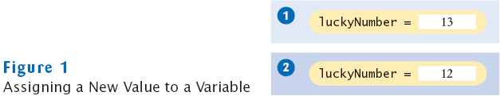
Uninitialized Variables
- Error:
int luckyNumber;
System.out.println(luckyNumber);
// ERROR - uninitialized
variable
Syntax 2.2: Assignment
Example:
Purpose:
To assign a new value to a previously defined variable. |
Self Check
- Is 12 = 12 a valid expression in the Java
language?
- How do you change the value of the greeting variable to "Hello,
Nina!"?
Answers
- No, the left-hand side of the = operator must
be a variable
- greeting = "Hello, Nina!";
Note that
String greeting = "Hello, Nina!";
is not the right answer–that statement defines a new variable
Objects and Classes
- Object: entity that you can manipulate in your programs (by
calling methods)
- Each object belongs to a class. For example, System.out
belongs to the class PrintStream
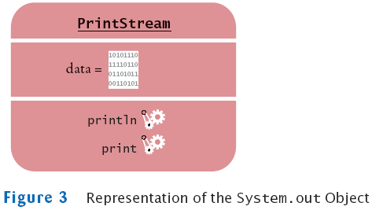
Methods
- Method: Sequence of instructions that accesses the data of an
object
- You manipulate objects by calling its methods
- Class: Set of objects with the same behavior
- Class determines legal methods
String greeting = "Hello";
greeting.println() // Error
greeting.length() // OK
- Public Interface: Specifies what you can do with the objects of a
class
A Representation of Two String Objects
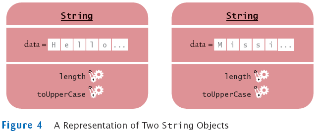
String Methods
- length: counts the number of characters in a string
String greeting = "Hello, World!";
int n = greeting.length(); // sets n to 13
- toUpperCase:
creates another String object that contains the characters of the
original string, with lowercase letters converted to uppercase
String river = "Mississippi";
String bigRiver = river.toUpperCase(); // sets bigRiver to "MISSISSIPPI"
- When applying a method to an object, make sure method is defined
in the appropriate class
System.out.length(); // This method call is an error
Self Check
- How can you compute the length of the string "Mississippi"?
- How can you print out the uppercase version of "Hello,
World!"?
- Is it legal to call river.println()? Why or why not?
Answers
- river.length() or "Mississippi".length()
- System.out.println(greeting.toUpperCase());
- It is not legal. The variable river has type String.
The println method is not a
method of the String class.
Implicit and Explicit Parameters
- Parameter (explicit parameter): Input to a method. Not all
methods have explicit parameters.
System.out.println(greeting)
greeting.length() // has no explicit parameter
- Implicit parameter: The object on which a method is invoked
System.out.println(greeting)
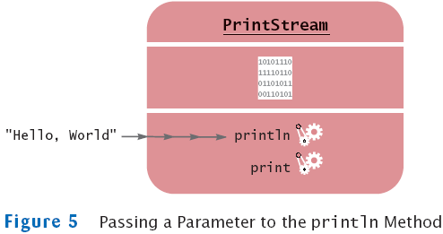
Return Values
- Return value: A result that the method has computed for use by
the code that called it
int n = greeting.length(); // return value stored in n

Passing Return Values
- You can also use the return value as a parameter of another
method:
System.out.println(greeting.length());
- Not all methods return values. Example: println
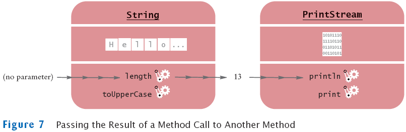
A More Complex Call
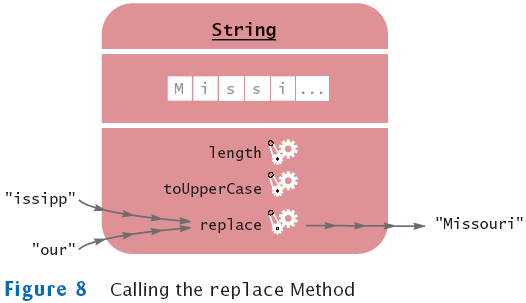
Method Definitions
Method Definitions
Self Check
- What are the implicit parameters, explicit parameters,
and return values in the
method call river.length()?
- What is the result of the call river.replace("p", "s")?
- What is the result of the call greeting.replace("World",
"Dave").length()?
- How is the toUpperCase method defined in the String
class?
Answers
- The implicit parameter is river. There is no
explicit parameter. The return value
is 11
- "Missississi"
- 12
- As public String toUpperCase(), with no explicit
parameter and return type String.
Number Types
- Integers: short, int, long
13
- Floating point numbers: float, double
1.3
0.00013
- When a floating-point number is multiplied or divided by 10, only
the position of the decimal point changes; it "floats". This
representation is related to the "scientific" notation 1.3 × 10-4.
1.3E-4 // 1.3 ×
10-4 written in Java
- Numbers are not objects; numbers types are primitive types
Arithmetic Operations
- Operators: + - *
10 + n
n - 1
10 * n // 10 × n
- As in mathematics, the * operator binds more strongly
than the + operator
x + y * 2 // means the sum of x and y * 2
(x + y) * 2 // multiplies the sum of x and y with 2
Self Check
- Which number type would you use for storing the area
of a circle?
- Why is the expression 13.println() an error?
- Write an expression to compute the average of the values x
and y.
Answers
- double
- An int is not an object, and you cannot call a method
on it
- (x + y) * 0.5
Rectangular Shapes and Rectangle Objects
- Objects of type Rectangle describe rectangular shapes
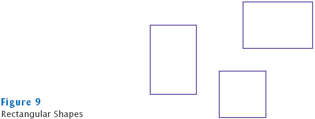
Rectangular Shapes and Rectangle Objects
- A Rectangle object isn't a rectangular shape–it is an
object that contains a set of numbers that describe the rectangle
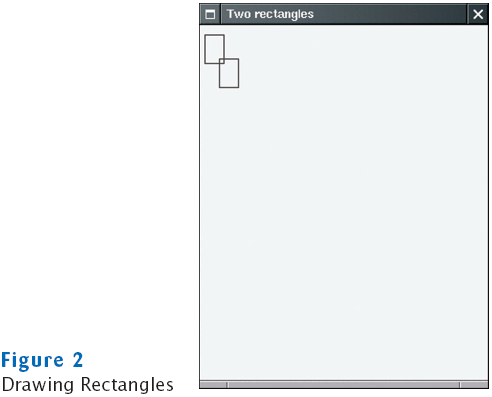
Constructing Objects
new Rectangle(5, 10, 20, 30)
Constructing Objects
- The process of creating a new object is called construction
- The four values 5, 10, 20, and 30
are called the construction parameters
- Some classes let you construct objects in multiple ways
new Rectangle()
// constructs a rectangle with its top-left corner
// at the origin (0, 0), width 0, and height 0
Syntax 2.3: Object Construction
| |
new ClassName(parameters)
|
Example:
| |
new Rectangle(5, 10, 20, 30)
new Rectangle() |
Purpose:
To construct a new object, initialize it with the construction
parameters, and return a reference to the constructed object |
Self Check
- How do you construct a square with center (100, 100)
and side length 20?
- What does the following statement print?
System.out.println(new Rectangle().getWidth());
Answers
- new Rectangle(90, 90, 20, 20)
- 0
Accessor and Mutator Methods
- Accessor method: does not change the state of its implicit
parameter
double width = box.getWidth();
- Mutator method: changes the state of its implicit parameter
box.translate(15, 25);
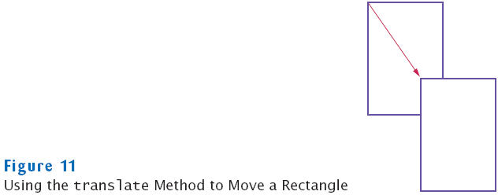
Self Check
- Is the toUpperCase method of the String
class an accessor or a mutator?
- Which call to translate is needed to move the box
rectangle so that its top-left corner is the origin (0, 0)?
Answers
- An accessor–it doesn't modify the original string but
returns a new string with uppercase letters
- box.translate(-5, -10), provided the method is called
immediately after storing the new rectangle into box
Implementing a Test Program
- Provide a new class
- Supply a main method
- Inside the main method, construct one or more objects
- Apply methods to the objects
- Display the results of the method calls
Importing Packages
Don't forget to include appropriate packages:
- Java classes are grouped into packages
- Import library classes by specifying the package and class name:
import java.awt.Rectangle;
- You don't need to import classes in the java.lang
package
such as String and System
Syntax 2.4 : Importing a Class from a Package
| |
import packageName.ClassName;
|
Example:
| |
import java.awt.Rectangle; |
Purpose:
To import a class from a package for use in a program.
|
File MoveTester.java
Output
After moving, the top-left corner is:
20
35
Self Check
- The Random class is defined in the java.util
package. What do you need to do in
order to use that class in your program?
- Why doesn't the MoveTester program print the width and
height of the rectangle?
Answers
- Add the statement import java.util.Random;
at the top of your program
- Because the translate method doesn't modify the shape
of the rectangle
Testing Classes in an Interactive Environment
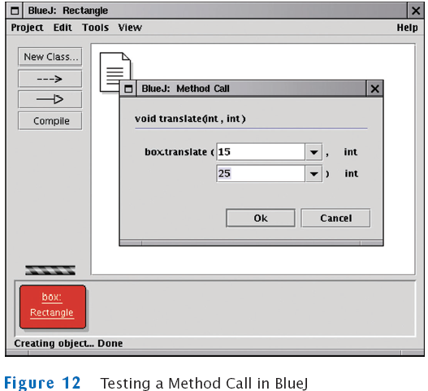
The API Documentation
The API Documentation of the Standard Java Library
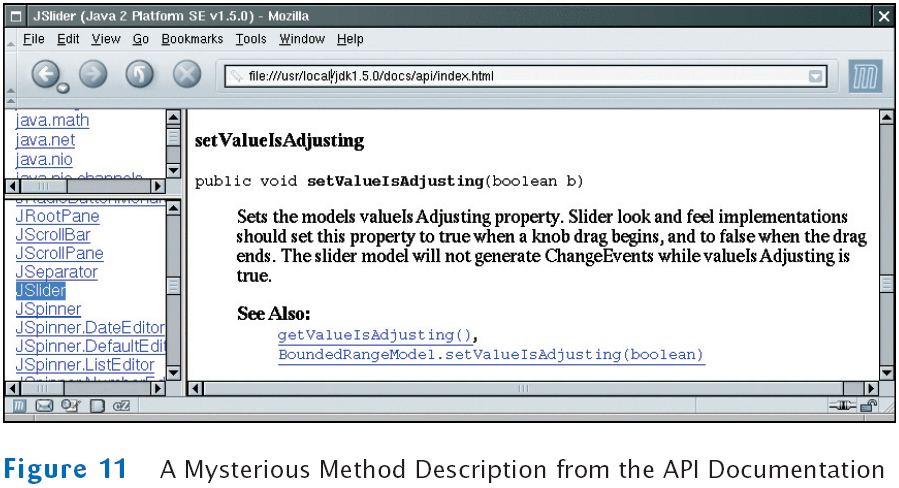
The API Documentation for the Rectangle Class
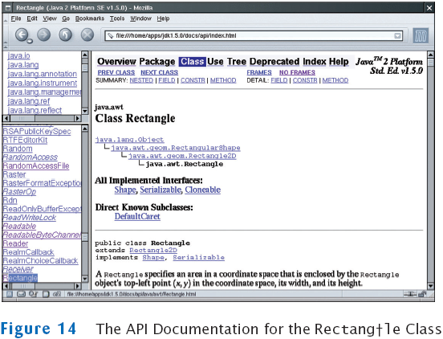
Javadoc Method Summary
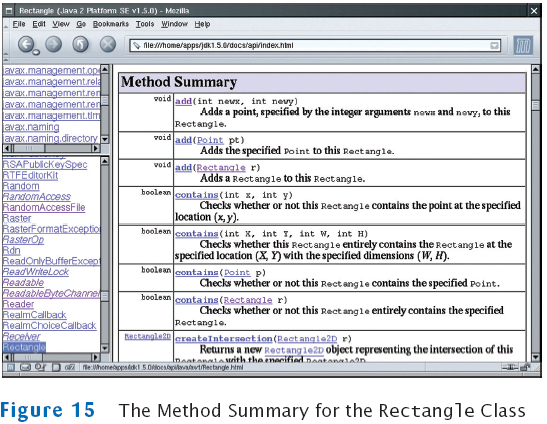
translate Method Documentation
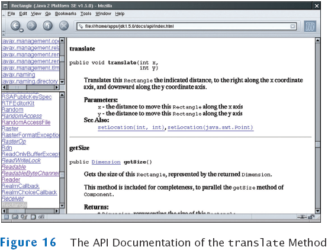
Self Check
- Look at the API documentation of the String
class. Which method would you
use to obtain the string "hello, world!" from the string "Hello,
World!"?
- In the API documentation of the String class, look at
the description of the trim method. What is the result of
applying trim to the
string " Hello, Space ! "?
(Note the spaces in the string.)
Answers
- toLowerCase
- "Hello, Space !"–only the leading and trailing spaces
are trimmed
Object References
- Describe the location of objects
- The new operator returns a reference to a new object
Rectangle box = new Rectangle();
- Multiple object variables can refer to the same object
Rectangle box = new Rectangle(5, 10, 20, 30);
Rectangle box2 = box;
box2.translate(15, 25);
- Primitive type variables ≠ object variables
Object Variables and Number Variables
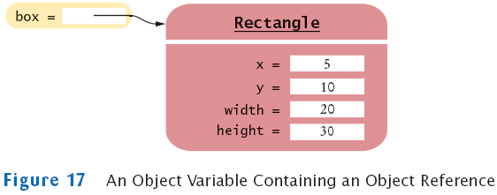
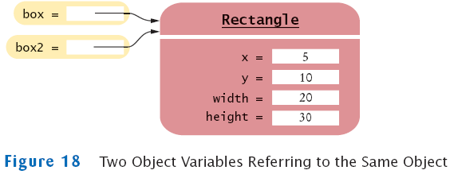
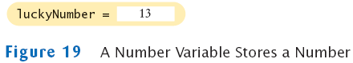
Copying Numbers
int luckyNumber = 13;
int luckyNumber2 = luckyNumber;
luckyNumber2 = 12;
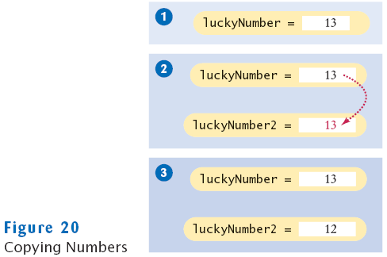
Copying Object References
Rectangle box = new Rectangle(5, 10, 20, 30);
Rectangle box2 = box;
box2.translate(15, 25);
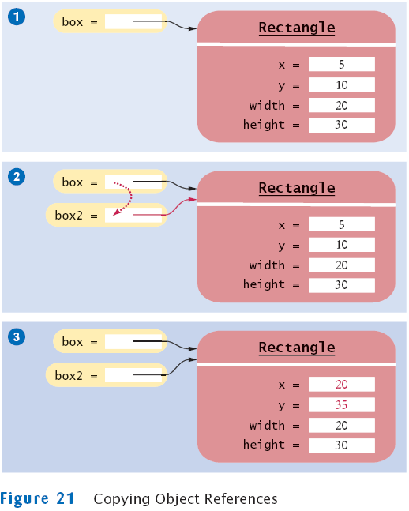
Self Check
- What is the effect of the assignment greeting2 =
greeting?
- After calling greeting2.toUpperCase(), what are the
contents of greeting and greeting2?
Answers
- Now greeting and greeting2 both
refer to the same String object.
- Both variables still refer to the same string, and the string has
not been modified. Recall that the toUpperCase method
constructs a new string that contains uppercase characters, leaving the
original string unchanged.
Mainframes–When Dinosaurs Ruled the Earth